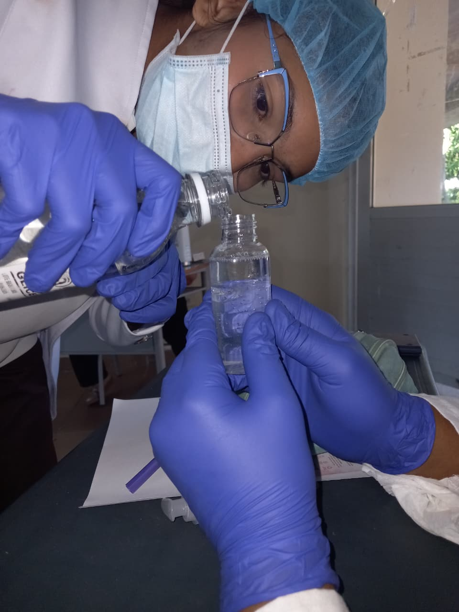
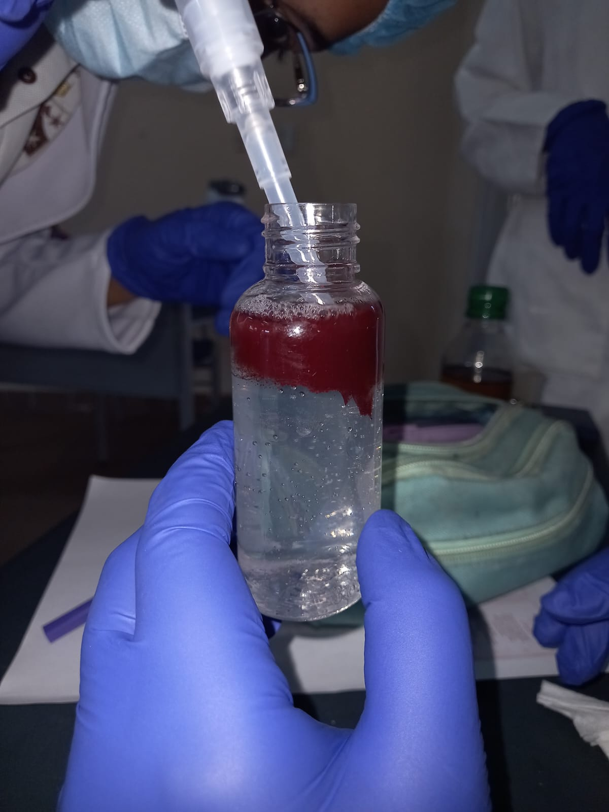
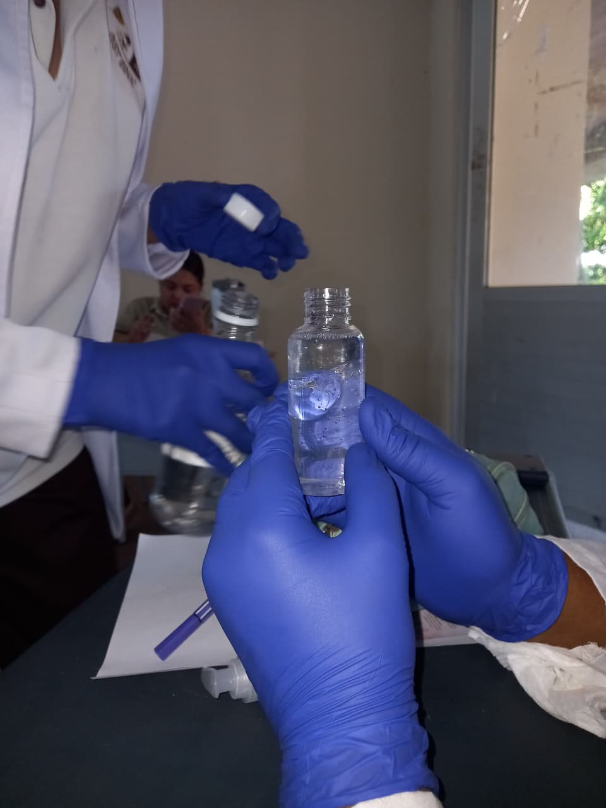
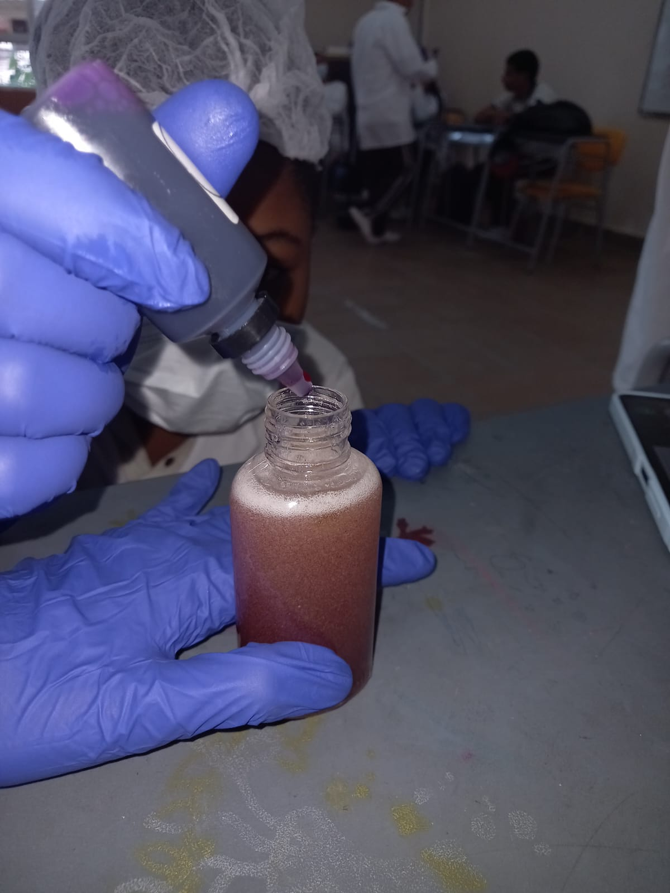
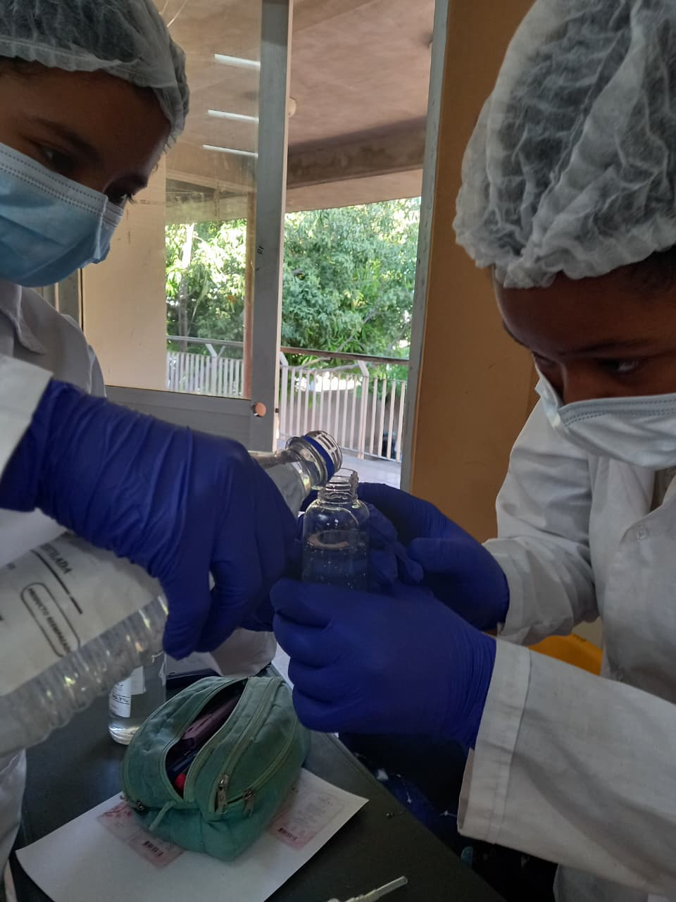
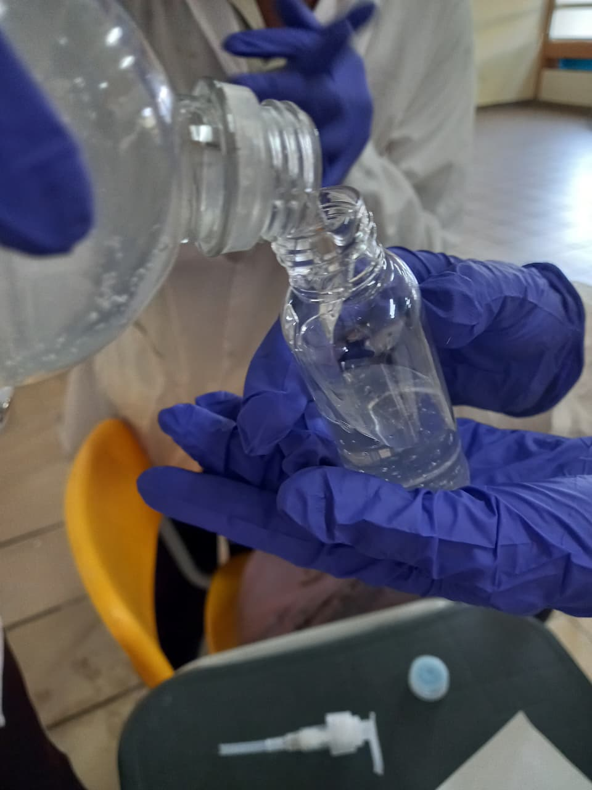

Un proyecto de química enfocado en la elaboración de un jabón líquido para manos, combinando conocimientos científicos, creatividad y responsabilidad.
Conocer el proyectoConociendo la propuesta de Pomelú
Pomelú es un jabón líquido para manos elaborado como proyecto escolar de química. Su formulación combina diferentes componentes que permiten obtener un producto con características adecuadas para la higiene de las manos.
El producto fue preparado en una presentación aproximada de 89 mL, utilizando una combinación de base de jabón, agua destilada, glicerina, colorante y esencia.
Aplicar conocimientos de química mediante la elaboración de un producto de uso cotidiano, comprendiendo la función de sus componentes y el proceso de formulación.
Lo que busca alcanzar el proyecto
Elaborar un jabón líquido para manos mediante la combinación adecuada de diferentes componentes químicos, aplicando los conocimientos adquiridos durante el área de química.
Componentes utilizados en la elaboración
| Ingrediente | Función |
|---|---|
| Base de jabón | Proporciona la capacidad limpiadora del producto. |
| Agua destilada | Actúa como medio de dilución y permite obtener la consistencia adecuada. |
| Glicerina | Ayuda a mantener la suavidad y humectación de la piel. |
| Colorante rosado | Proporciona el color característico de Pomelú. |
| Esencia de chicle | Aporta el aroma agradable al producto. |
Proceso de elaboración de Pomelú
Se organizaron y limpiaron los materiales y recipientes necesarios para realizar la elaboración de manera ordenada e higiénica.
Se incorporaron los componentes de acuerdo con la formulación establecida, mezclándolos cuidadosamente para obtener una preparación uniforme.
Se añadió la glicerina, el colorante y la esencia, procurando que cada componente quedara distribuido adecuadamente en la mezcla.
Se mezcló cuidadosamente hasta obtener una apariencia homogénea y una textura apropiada para el jabón líquido.
Finalmente, el jabón fue colocado en su recipiente correspondiente, obteniendo una presentación aproximada de 89 mL.
Comprendiendo qué ocurre en nuestro producto
Contiene sustancias tensioactivas que permiten desprender suciedad y grasa de las manos.
Es un compuesto utilizado como humectante y ayuda a conservar una sensación suave en la piel.
Funciona como componente principal del medio líquido y facilita la incorporación de los demás ingredientes.
Se utiliza principalmente para proporcionar una apariencia visual atractiva al producto.
Aporta el aroma característico de Pomelú.
Pomelú se relaciona con la química orgánica porque varios de los componentes presentes en su formulación contienen carbono y pertenecen a familias de compuestos orgánicos. La química orgánica estudia principalmente las sustancias basadas en carbono y sus propiedades, estructuras y transformaciones.
Uno de los ejemplos más claros es la glicerina, también llamada glicerol, un compuesto orgánico que contiene carbono, hidrógeno y oxígeno. En Pomelú cumple la función de humectante, ayudando a conservar una sensación de suavidad en la piel.
Además, la base de jabón contiene sustancias tensioactivas relacionadas con compuestos orgánicos que poseen cadenas de carbono. Estas sustancias permiten interactuar con la grasa y el agua, facilitando la eliminación de la suciedad durante el lavado de las manos.
La esencia de chicle también puede contener diferentes compuestos orgánicos responsables de sus propiedades aromáticas. Por esta razón, la elaboración de Pomelú permite observar cómo la química orgánica está presente en productos de uso cotidiano.
Las moléculas presentes en los agentes limpiadores poseen características que permiten interactuar tanto con el agua como con sustancias grasas. De esta manera, ayudan a desprender la suciedad de las manos para que pueda ser eliminada durante el enjuague.
Base de jabón + agua destilada + glicerina + colorante + esencia
La elaboración de Pomelú permite relacionar la química con una situación cotidiana, demostrando cómo diferentes sustancias pueden combinarse para obtener un producto funcional.
El producto está diseñado para contribuir a la limpieza de las manos, mientras sus componentes complementarios aportan características de textura, apariencia y aroma.
Como resultado se obtuvo un jabón líquido de apariencia rosada, aroma agradable y presentación adecuada para el propósito planteado en el proyecto.
El producto debe utilizarse únicamente para la higiene de las manos. Se debe evitar el contacto con los ojos y mantenerlo fuera del alcance de los niños pequeños. En caso de irritación, se recomienda suspender su uso.
Registro del proceso de elaboración y presentación de Pomelú

Registro fotográfico del proyecto Pomelú.

Proceso de elaboración del jabón líquido.

Materiales y elementos utilizados durante el proyecto.

Registro del procedimiento de elaboración.

Presentación del producto terminado.

Evidencia final del proyecto Pomelú.
Escudo institucional de nuestra institución educativa.
Integrantes del proyecto Pomelú
Grado 11-3
Grado 11-3
Grado 11-3
Grado 11-3
Institución Educativa El Carmelo
San Juan del Cesar, La Guajira
Docente: Katerine Liñan Montero